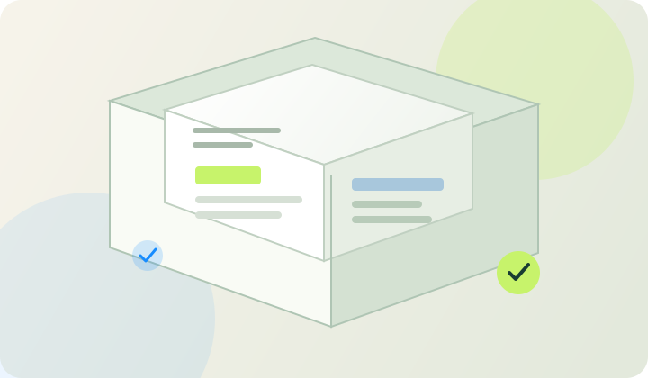

Starter Website
Request a quote
For individuals and small businesses.
- Responsive website foundation
- Essential agreed pages
- Standard visual direction
- Contact path and basic SEO setup
- Deployment assistance scoped
Plans and pricing
Website projects start at ₹5,000. The final quote depends on the pages, design, content, functionality and integrations your project needs. We confirm the exact scope and price before work begins.

SCOPE BEFORE BUILD
Each plan is a conversation starter. The written proposal should define deliverables, exclusions, milestones and any recurring costs.
PROJECT STARTING POINT
We currently consider website projects from this starting point. More complex projects are scoped individually.
Request a quote
For individuals and small businesses.
Request a quote
For growing businesses and teams.
Request a quote
For a distinctive digital presence.
Request a quote
For applications and complex workflows.
The ₹5,000 figure is a minimum starting budget, not a promise that every project or feature can be delivered at that price. These are scope outlines, not a binding offer or a claim that all listed features are currently available. Final deliverables, price, tax, timeline, revisions, payment milestones and acceptance criteria must be documented in a proposal.
Costs to discuss
Recurring services should never be hidden inside a one-time development quote.
Discovery, design, agreed pages, implementation, testing, and handover as specified in the proposal.
Hosting, domain renewal, maintenance, email delivery, monitoring or support, if offered and agreed.
Payment processing, paid APIs, premium software, storage or AI usage charged by external providers.
No automatic checkout
Custom projects need a confirmed scope and explicit agreement on fees and terms before payment is requested.
CLEAR ANSWERS
Practical information about scope, process, pricing and what to expect.
The current minimum project budget we consider is ₹5,000. This is a starting point for a tightly scoped project, not a universal fixed price or a promise that all features fit this amount.
The quote depends on page count, content, custom design, interactions, integrations, data handling, accessibility, testing, migration and handover. We review these requirements before confirming a written proposal.
The plan cards describe possible levels of scope. They are not fixed bundles with hidden assumptions. The final proposal defines exactly what is included, what is excluded, revision limits and acceptance criteria.
Not automatically. Domain renewal, hosting, business email, backups, monitoring and premium services may create recurring costs. The proposal should identify each provider, owner and renewal responsibility.
Basic technical SEO foundations can be scoped with website development. Ongoing content production, keyword research, outreach, local SEO management and recurring reporting are separate workstreams unless listed in the proposal.
A phased approach may be possible. We can prioritize the essential launch scope first and document later phases, dependencies, budgets and acceptance criteria.
Payment amounts, milestones and due dates must be agreed in the written proposal. This website does not collect payments or run an automatic checkout.
Post-launch changes, maintenance and support should have a separate scope and response expectations. We clarify what is included in handover and what would be treated as new work.
Need an answer about your project?
Talk to us ↗